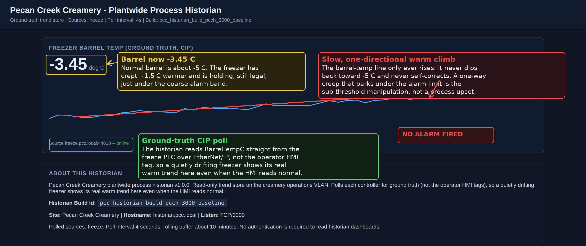
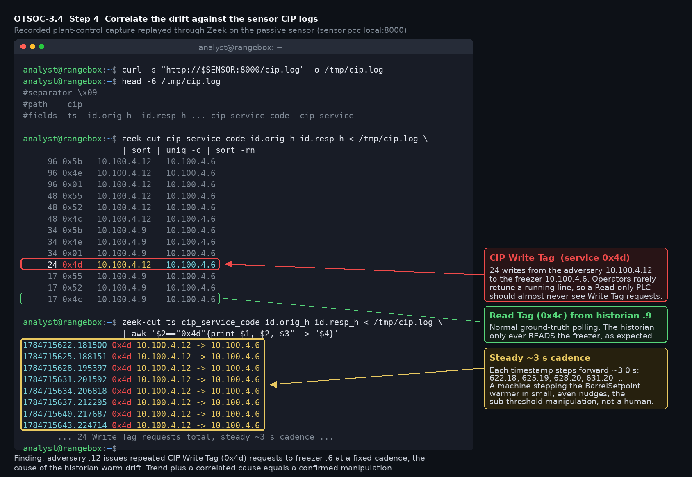

Exercise OTSOC-3.4: Hunt the Silent Drift
Engagement Status
| Client | Pecan Creek Creamery (fictional) |
|---|---|
| Role | OT SOC Analyst, Threat Hunting |
| Phase | Reconstruction Detection Engineering Threat Hunting |
What you know so far: Quality is complaining about soft, grainy ice cream off the continuous freezer line. No alarm has fired. No detection has tripped. There is no alert to investigate, which means you are not responding to anything; you are hunting. The freezer barrel is creeping warm in steps small enough to stay under the coarse alarm limits, and your job is to find it and decide whether it is an attack or just a bad day on the line.
Scenario
Quality at Pecan Creek Creamery is complaining about soft product from the continuous freezer. No alarm has fired. You suspect a slow, sub-threshold manipulation of the freezer barrel setpoint, deliberately tuned to stay under the coarse alarm band, the patient version of the fast drift you have already seen run. The freezer freeze.pcc.local is drifting warm under the adversary's control; normal barrel is around minus 5 C, and the drift creeps toward and holds just below the alarm band so nothing trips.
The adversary acts; you hunt without an alert. With no alarm to start from, you go to the trends. The historian at historian.pcc.local keeps roughly ten minutes of barrel samples at /api/history and the current value at /api/latest. The passive sensor at sensor.pcc.local serves Zeek logs from a recorded capture of the freezer control network, so the CIP setpoint traffic is complete and deterministic. Because the capture was taken on the plant control segment, every host in those logs appears with its plant control address in the 10.100.4.x range. You chart the trend, decide whether the warm climb is a deliberate sub-threshold manipulation or a normal process upset, and triage the finding as an incident rather than a maintenance ticket.
Why this matters
Detection engineering catches what you already know how to describe. Threat hunting catches what slipped under your detections, and the silent sub-threshold drift is built to do exactly that. An attacker who understands your alarm limits will move the process slowly enough to stay inside them, knowing the SOC waits for alerts and the operator waits for alarms. Nobody is watching the space between normal and the alarm line, and that space is where a patient adversary lives.
Hunting is also where analysts learn to triage. Not every anomaly is an attack; freezers genuinely have bad days. The skill that separates a SOC analyst from an alarm-watcher is distinguishing a deliberate, one-directional, under-the-radar climb from a process upset that wanders and self-corrects, and then making the incident-versus-ticket call with confidence. Calling a real attack a maintenance ticket loses you the plant; calling every wobble an incident burns out your team. The judgment is the deliverable.
| Credentials in scope | Username | Password | Where it is used |
|---|---|---|---|
| None | n/a | n/a | The historian, sensor, and adversary feed are unauthenticated HTTP |
Learning Objectives
- Pull the freezer barrel temperature trend from the historian
- Detect the slow sub-threshold warm drift that fired no alarm
- Distinguish a deliberate manipulation from a normal process upset
- Correlate the drift against the sensor CIP setpoint writes
- Triage the finding as an incident rather than a maintenance ticket
- Recover the silent-drift flag
| Detail | Value |
|---|---|
| Difficulty | Intermediate |
| Estimated Time | 45 to 60 minutes |
| Prerequisites | HTTP/JSON, basic time-series reasoning, OTSOC-3.1 through 3.3 |
| Flag | Source | Found? |
|---|---|---|
OCR{silent_drift_confirmed_<masked>} |
Confirmed sub-threshold drift via adversary marker |
Before You Begin: Read the Network Panel
After the lab shows Running, read the target IPs from the Exercise Network panel into shell variables. Copy the exact values; do not hardcode subnet octets.
Kali - set target variables from the Exercise Network panel
# Replace each value with the IP shown in the Exercise Network panel.
HIST=<historian-ip-from-panel> # historian.pcc.local, HTTP 3000
SENSOR=<sensor-ip-from-panel> # sensor.pcc.local, HTTP 8000
INJECT=<inject-ip-from-panel> # inject.pcc.local, HTTP 8080
echo "hist=$HIST sensor=$SENSOR inject=$INJECT"
Confirm the historian answers, since the trend is where the hunt begins.
A succeeded! means the trend source is live. With no alarm and no alert to start from, the historian trend is your only lead.
Walkthrough
Step 1: Start From the Trend, Not an Alert
There is no alarm, so there is no alert to open. A hunt starts from a hypothesis and the data, not from a ticket, and the historian at port 3000 serves a real plantwide trends dashboard that renders the freezer barrel temperature as a live chart. Open the dashboard in your browser first and read the shape of the curve with your eyes before you touch a shell. Address the historian by the IP shown in the Exercise Network panel, never by a hard-coded lab octet.
Kali - open the historian dashboard in the browser
In your browser address bar, enter the historian IP from the Exercise Network panel on port 3000, for example http://HIST_IP:3000/.

The dashboard is titled Pecan Creek Creamery Plantwide Process Historian, and the FREEZER BARREL TEMP trend is the one that matters here. The About panel explains why the historian is the right instrument for this hunt: it polls each controller for ground truth, so a freezer that is quietly drifting warm shows its real warm trend on this chart even when the operator HMI still reads a comfortable number. Normal barrel sits near minus 5 C. What the chart shows instead is a slow, one-directional upward slope that creeps toward the alarm band and holds just below it, which is exactly why no alarm fired. A healthy freezer would hold flat around its setpoint with small jitter in both directions, so a barrel-temperature line that only climbs, and never falls back, is the silent drift you were sent to find.
Reading the climb off the dashboard is the primary lead. Pulling the raw series is a legitimate optional cross-check when you want to quantify the slope or feed a detection: /api/history returns the same samples the chart draws, in machine form, so you can measure the rate of climb offline or hand the numbers to a rule. The optional pull below also writes /tmp/freeze-trend.json, which the sparkline in Step 2 reuses.
Kali (optional) - pull the raw series to quantify the slope
The historian keeps roughly ten minutes of samples. Read them in time order and confirm the numbers match what the chart already showed you: a steady warm climb that never falls back. The raw pull is a cross-check on the dashboard read, not a replacement for it.
Step 2: Chart the Climb
Numbers in a JSON blob hide trends; a quick chart reveals them. Extract the barrel samples in time order and print them as a simple sparkline so the monotonic climb is obvious to the eye.
Kali - extract and sparkline the barrel temperature
python3 - <<'PY'
import json
data = json.load(open('/tmp/freeze-trend.json'))
# /api/history returns a list of samples; the freezer barrel reading is the
# freeze_barrel_temp_c field. Adjust the key if your Step 1 pull differs.
samples = data if isinstance(data, list) else data.get('freeze', [])
temps = []
for row in samples:
if isinstance(row, dict):
temps.append(row.get('freeze_barrel_temp_c'))
else:
temps.append(row)
temps = [t for t in temps if isinstance(t, (int, float))]
if temps:
lo, hi = min(temps), max(temps)
blocks = '_.-=+*#'
rng = (hi - lo) or 1
line = ''.join(blocks[int((t - lo) / rng * (len(blocks) - 1))] for t in temps)
print(f"min={lo:.2f}C max={hi:.2f}C samples={len(temps)}")
print(line)
else:
print("no numeric barrel samples found; re-check the key path from Step 1")
PY
A rising staircase from a low minimum to a higher maximum, with the line trending steadily up and never falling back, is the silent drift. Note the maximum: it climbs toward the alarm band but holds just under it, which is exactly why no alarm fired. Compare the spread; if min and max are nearly equal the freezer is healthy, and you would be looking at a process complaint, not an attack.
Step 3: Decide Attack Versus Upset
A warm trend alone is not proof of an attack. Real freezers drift during defrost cycles, compressor hiccups, and ambient swings. The distinguishing test is the shape of the curve over time, so reason about it explicitly.
The attack-versus-upset decision
Process upset: wanders up AND down, self-corrects back toward setpoint,
spikes and recovers, correlates with a known event
(defrost, door open, compressor cycle).
Sub-threshold climbs in small, steady, one-directional steps; holds
manipulation: just below the alarm limit; does not self-correct;
no benign event explains it.
The freezer barrel here climbs monotonically toward the ceiling and stays there. A self-correcting upset would have dipped back toward minus 5 C; this one does not. A one-directional creep that parks just under the alarm band is the signature of a deliberate, sub-threshold manipulation. The patience is the tell: nobody operates a freezer this way by accident.
Step 4: Correlate Against the Sensor Logs
A trend tells you the process moved; the sensor logs tell you what moved it. The passive sensor serves Zeek logs from a recorded capture of the freezer control network, and cip.log records every EtherNet/IP CIP request on that segment. Pull it and look for the setpoint writes driving the barrel warm. A trend that correlates with deliberate setpoint writes is no longer ambiguous.
Kali - pull the recorded CIP log from the sensor
The interesting column is cip_service_code. On an Allen-Bradley controller a CIP Read Tag is service 0x4c and a CIP Write Tag is service 0x4d. A healthy freezer sees a steady trickle of Read Tag polls from the historian; it should almost never see Write Tag requests, because operators rarely retune a running line. Count the service codes and see who is writing.
Kali - tally CIP services and find who writes the freezer
The recorded capture uses the plant control addressing, so the freezer appears as 10.100.4.6 and the writer appears as 10.100.4.12 (the scripted adversary), while the historian polls as a reader. You should see a block of Write Tag requests aimed at the freezer that has no business being there:
Expected: a stream of CIP Write Tag (0x4d) requests at the freezer
Read that as three facts. The freezer at 10.100.4.6 is the target of every request. The historian at 10.100.4.9 only ever reads it (0x4c), which is normal ground-truth polling. A second host at 10.100.4.12 both reads and, decisively, issues repeated Write Tag (0x4d) requests to the freezer. Now isolate just those writes and watch them march across the capture window.
Kali - list the Write Tag requests in time order
The timestamps step forward at a steady cadence for the whole window, each one a small nudge to the freezer setpoint. The freezer exposes one writable process tag that moves the barrel, the BarrelSetpoint, so a run of Write Tag requests to 10.100.4.6 that lines up in time with the historian barrel climb is the setpoint manipulation driving the drift. CIP writes aligned with the warm trend connect cause to effect: someone is moving the setpoint, the freezer is not failing.

Capture addresses vs your live panel (shared last octet)
The sensor log is a recorded capture on the plant control network, so the
freezer shows there as 10.100.4.6. Your live Exercise Network panel uses
your own session subnet, so the freezer you connect to has a different
third octet but the same last octet, .6. Line the captured host up with
its panel device by that shared last octet: the writer at 10.100.4.12
in the log is the same scripted adversary whose live panel IP ends in
.12, the one you query for the confirmation marker in the next step.
Step 5: Anchor the Finding on the Adversary Marker
The drift itself is non-deterministic; its exact timing varies per session. To grade the hunt deterministically, the scripted adversary at inject exposes a fixed marker the instant the drift loop engages. Read it to confirm the hunt landed on a real attack and to anchor the flag.
Kali - confirm the drift is engaged and read the signature marker
A drift_active of true confirms the slow-drift attack is running, and the drift_signature of silent_drift_confirmed_attack is the deterministic marker that your hunt found a deliberate manipulation, not a process upset. The marker is independent of the drift timing, so it grades cleanly.
Step 6: Triage, Incident or Ticket
The hunt is only finished when you make the call. Write the triage decision explicitly, because the judgment is the deliverable.
The triage decision, written up
Finding: freezer barrel drifting warm in steady, one-directional steps,
holding just under the alarm band, no benign event explains it; sensor
CIP logs show BarrelSetpoint writes stepping the target warmer.
Decision: INCIDENT, not a maintenance ticket.
Rationale: a deliberate, under-the-radar setpoint manipulation tuned to
evade the alarm band is an adversary action with product-safety impact,
not a component fault. Open an incident, preserve the historian trend
and CIP logs as evidence, and escalate.
A deliberate sub-threshold setpoint manipulation is an incident. A maintenance ticket assumes a component is failing and a technician will fix it; this is an adversary, and treating it as routine maintenance would let the attack continue while quality keeps shipping soft product.
Output Interpretation
- No alarm does not mean no attack. The most dangerous manipulations are tuned to stay inside the alarm band, in the blind spot between normal and the alarm line.
- The shape of the curve is the decision. One-directional, steady, self-non-correcting, parked just under the limit, equals deliberate. Wandering, self-correcting, event-correlated equals upset.
- A trend plus a cause is a finding. The historian shows the barrel climbing; the sensor CIP logs show the setpoint writes driving it. Together they remove the ambiguity.
- Triage is the deliverable. Calling a deliberate sub-threshold manipulation a maintenance ticket lets the attack continue; calling every wobble an incident burns out the team. The judgment is the skill.
Analysis Questions
1. Why does a sub-threshold drift evade both the operator and the SOC, and what gap does that expose?
Reveal answer
The operator waits for an alarm and the SOC waits for an alert, and a sub-threshold drift produces neither because it stays inside the coarse alarm band. The gap it exposes is that alarm limits are tuned for gross faults, not for slow deliberate manipulation, and nobody is monitoring the space between the normal value and the alarm line. The fix is rate-of-change and trend monitoring (alarm on a slow monotonic drift even when the absolute value is still legal), which is a hunt finding that becomes a new detection.
2. How do you tell a deliberate manipulation from a genuine process upset using only the trend?
Reveal answer
A process upset wanders in both directions and self-corrects back toward the setpoint, and it usually correlates with a known event like a defrost cycle, a door open, or a compressor restart. A deliberate sub-threshold manipulation climbs in small, steady, one-directional steps, does not self-correct, and holds just below the alarm limit. The combination of monotonic direction, lack of self-correction, and parking right under the alarm band is the signature no normal process produces by accident. Correlating with deliberate setpoint writes in the CIP logs confirms it.
3. Why is the correct triage an incident rather than a maintenance ticket, and what changes downstream?
Reveal answer
A maintenance ticket routes the finding to a technician who assumes a component is failing and will repair or recalibrate it, which does nothing about an adversary actively moving the setpoint. Classifying it as an incident triggers the response process: preserve the historian trend and CIP logs as evidence, isolate the affected line, hunt for the access path the adversary used, and escalate for notification. The classification determines who responds and whether evidence is preserved, so getting it right is the difference between containing an attack and quietly letting it continue.
Key Takeaways
- Hunting starts from a hypothesis and the trend data, not from an alert. The silent drift is built to never produce an alert.
- The shape of the curve decides attack versus upset: one-directional, steady, non-self-correcting, parked under the alarm band is deliberate.
- A trend plus a correlated cause in the sensor logs turns a suspicion into a finding you can defend.
- Triage is the deliverable. A deliberate sub-threshold setpoint manipulation is an incident, and the classification determines whether evidence is preserved and who responds.
Capture the Flag
Confirm the silent drift is a deliberate attack: a monotonic warm climb held under the alarm band, correlated CIP setpoint writes, and the adversary drift_signature marker. Confirming the attack releases the flag, which has the masked form below.
Enter the recovered flag in the OCR platform to complete the exercise.